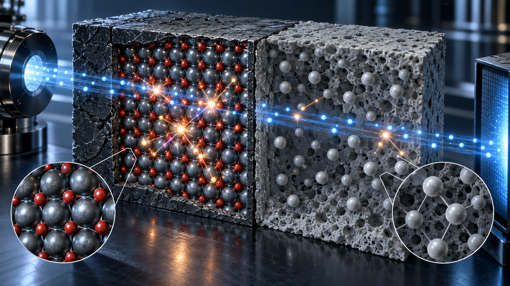
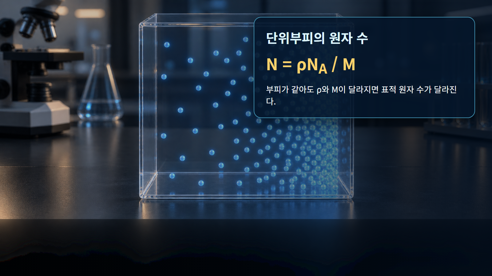
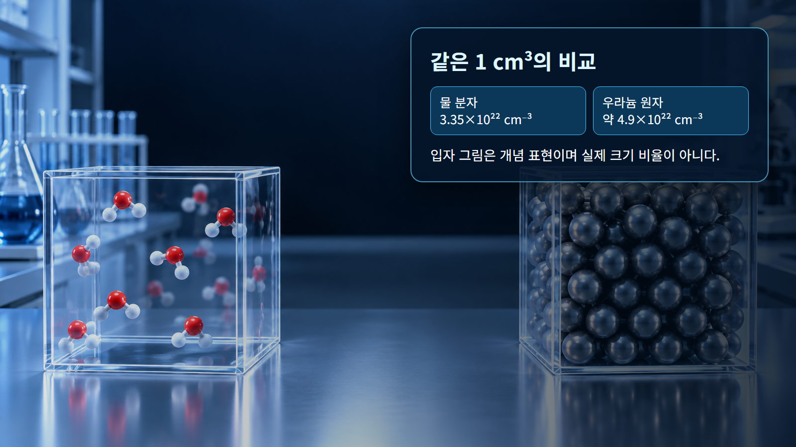

핵물리 기초 · 008
원자수밀도
단위부피 안의 표적 원자 수

원자수밀도는 단위부피에 들어 있는 원자의 수입니다. 같은 질량이라도 밀도와 몰질량이 다르면 중성자가 만나는 표적 수가 달라집니다.
원자수밀도의 정의와 원리
물 1 cm³의 질량을 1 g, 몰질량을 18.015 g/mol로 두면 물 분자수밀도는 약 3.34×10²² molecules/cm³입니다. 물 한 분자에는 수소 원자 두 개와 산소 원자 한 개가 있으므로 수소 원자수밀도는 약 6.69×10²² atoms/cm³, 산소는 약 3.34×10²² atoms/cm³입니다.

첫 번째 단계별 예시
계산 순서는 물질의 화학식과 상태를 정하고, 해당 온도의 밀도와 동위원소별 몰질량을 선택한 뒤, 성분별 원자 배수를 적용하는 방식입니다. 마지막에는 모든 성분의 질량 또는 원자분율 합이 1인지 확인해 조성 입력 오류를 찾습니다.

두 번째 비교 예시
우라늄 금속과 UO₂는 우라늄을 포함하지만 같은 부피에 들어 있는 우라늄 원자 수가 다릅니다. UO₂에는 산소가 포함되고 연료 소결체에는 기공이 있으므로 금속 우라늄의 밀도를 그대로 적용할 수 없습니다. 이 비교는 재료명만으로 수밀도를 정할 수 없음을 보여줍니다.
| 검토 단계 | 확인 내용 |
|---|---|
| 입력 | 핵종·조성·단위 |
| 계산 | 관계식과 단위 약분 |
| 해석 | 적용조건과 불확실성 |
원자력공학의 실제 적용
노심해석 코드는 핵종별 원자수밀도와 에너지별 단면적을 결합해 흡수·산란·핵분열 반응률을 계산합니다. 연소가 진행되면 U-235가 감소하고 핵분열생성물과 플루토늄 핵종이 생성되므로 수밀도 벡터도 시간에 따라 갱신됩니다.
오해와 적용 한계
그림 속 입자 개수는 개념을 보여주는 표본이며 실제 1 cm³의 원자를 하나씩 그린 것이 아닙니다. 또한 N=ρNₐ/M은 단일 성분의 기본식이므로 혼합물과 화합물에서는 질량분율, 화학양론과 동위원소 조성을 성분별로 반영해야 합니다.
추가 해석 기준
원자수밀도는 온도·압력·밀도 변화에 따라 달라집니다. 같은 물질도 가열되어 팽창하면 단위부피의 원자 수가 줄어 중성자와 만날 기회가 변합니다. 원자로에서는 연료의 이론밀도 대비 실제 소결밀도, 냉각재의 운전온도 밀도, 동위원소 원자분율을 구분합니다. 혼합물은 성분별 질량분율을 원자분율로 변환하고 각 핵종의 수밀도를 따로 계산한 뒤 합산합니다.
계산 결과의 검증 절차
먼저 ρ/M의 단위가 mol/cm³인지 확인하고 Nₐ를 곱해 atoms/cm³가 되는지 검산합니다. 이어서 결과가 일반적인 응축물질의 10²²~10²³ atoms/cm³ 범위인지 비교합니다. 범위를 크게 벗어나면 kg↔g, m³↔cm³ 또는 화학식의 원자 배수를 우선 점검합니다.
원자력공학에서의 활용
미시적 단면적 σ는 원자핵 하나의 반응 가능성을 나타내고, 거시적 단면적 Σ=Nσ는 물질 1 cm를 이동할 때의 반응 가능성과 연결됩니다. 연료 UO₂에서는 우라늄과 산소의 수밀도를 각각 계산하고, 농축 연료에서는 U-235와 U-238의 원자분율을 적용해 핵종별 수밀도를 나눕니다.
해석에서 주의할 점
운전온도가 상승해 냉각재가 팽창하면 질량이 같아도 단위부피당 원자 수가 감소합니다. 이는 감속과 흡수 반응률을 바꾸므로 상온 밀도를 운전조건에 그대로 사용할 수 없습니다. 소결체의 실제 밀도, 기공률, 온도·압력과 동위원소 조성을 입력조건에 함께 기록해야 합니다.
온도 변화가 반응률에 미치는 영향
냉각재 질량은 그대로인데 열팽창으로 부피가 5% 증가하면 원자수밀도는 원래 값의 1/1.05, 즉 약 95.2%로 감소합니다. 미시적 단면적과 중성자속이 같다는 단순 조건에서는 거시적 단면적과 단위길이당 반응 가능성도 같은 비율로 줄어듭니다. 실제 원자로에서는 온도에 따라 중성자 에너지분포와 단면적도 변하므로, 이 계산은 밀도 효과만 분리해 이해하는 첫 단계로 사용합니다.
핵심 정리
원자수밀도는 거시적 재료정보를 핵종별 반응 표적 수로 변환하는 값입니다. 밀도, 몰질량, 화학식, 동위원소 조성과 운전온도를 일관되게 사용해야 반응률 계산의 출발값을 신뢰할 수 있습니다.